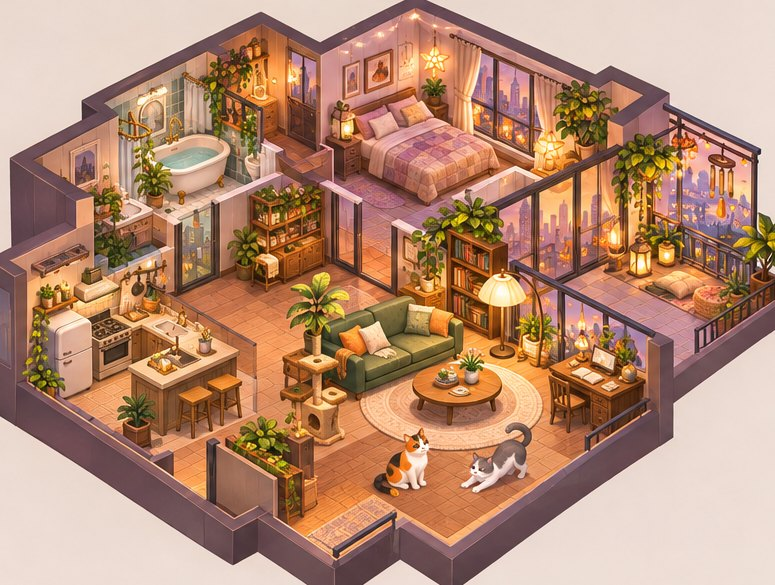
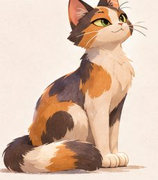
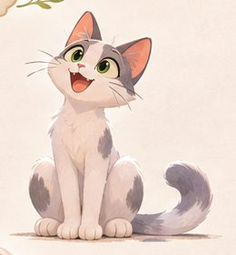
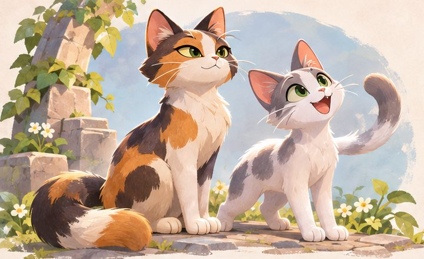
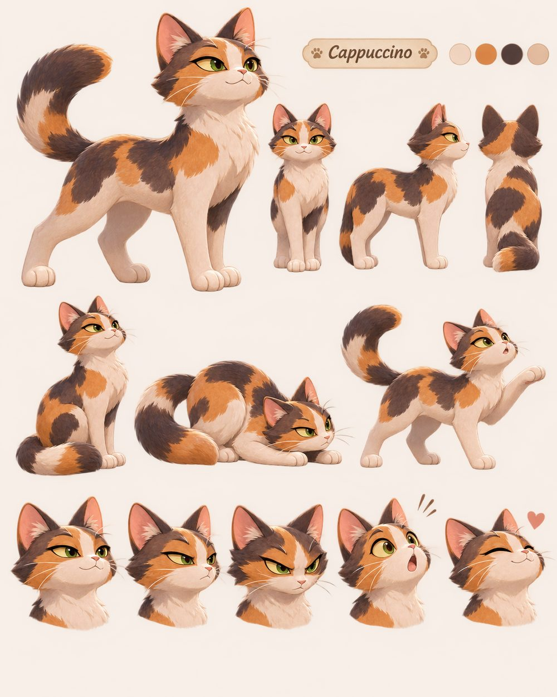
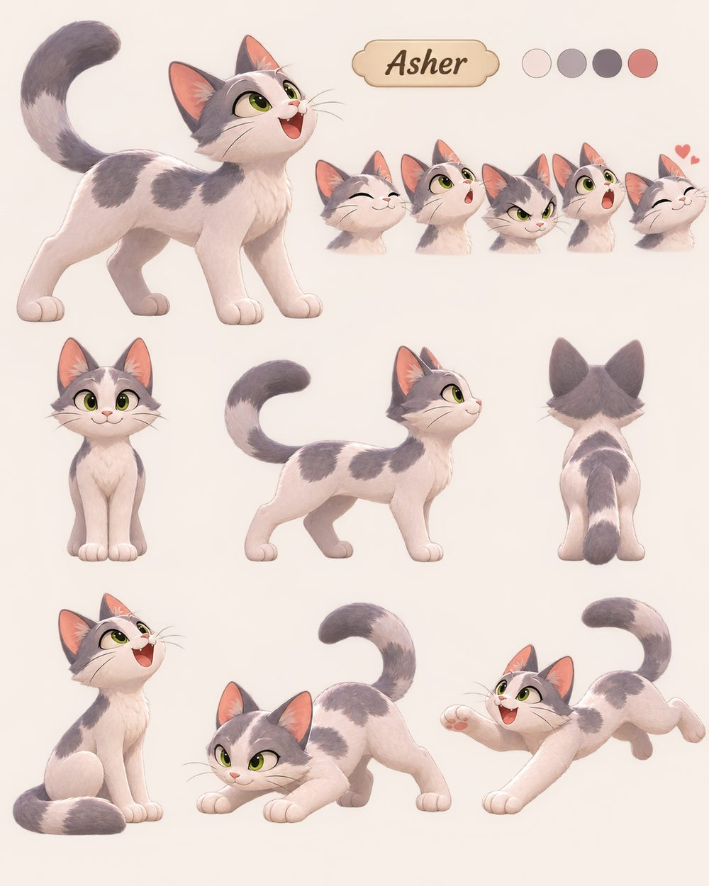
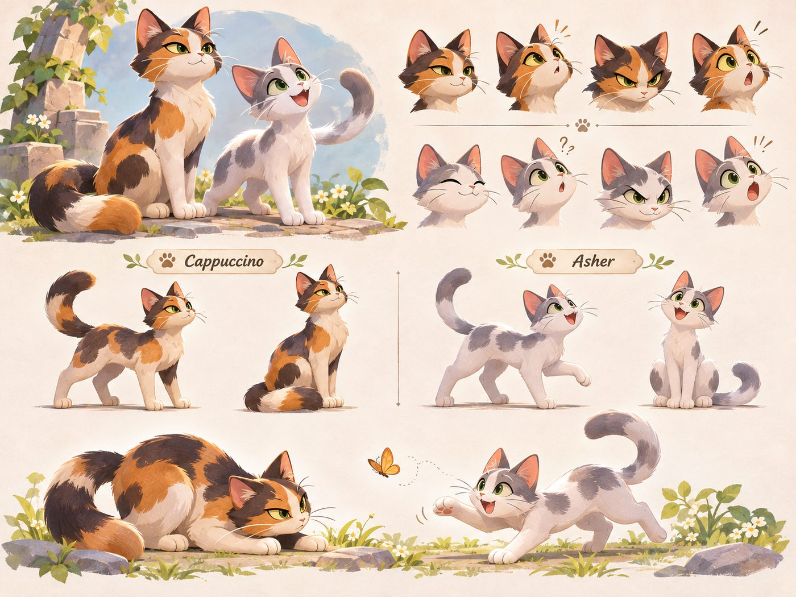
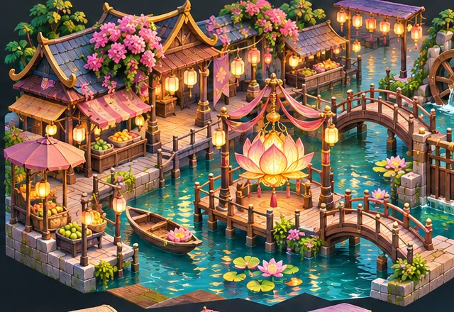

<title>Whisker Worlds Design Bible</title>
<meta name="claude:viewport-fit-sides" content="cover">
<link rel="preconnect" href="https://fonts.googleapis.com">
<link href="https://fonts.googleapis.com/css2?family=Fredoka:wght@500;600;700&family=Nunito:wght@400;600;700;800&display=swap" rel="stylesheet">
<style>
/* VOICE occasion: a cosy, warm game bible built on the team's own concept art
   IDEA the apartment as a dollhouse map, every piece of furniture a door to a world
   PICTURE the isometric apartment concept art with numbered Thresholds on it
   COLOUR dusk plum ground (the apartment walls), lantern peach, Cappuccino orange, each world's own art
   TYPE Fredoka (rounded, storybook game) + Nunito
   LAYOUT laptop: title row, then apartment art beside the world list; phone: title, art, list */
:root{color-scheme:light dark;--bg:light-dark(#ffffff,#16121b);--ink:light-dark(#221c26,#f1ebef);--soft:light-dark(#5e5563,#b7abb9);--tint:light-dark(#f7efe8,#211b27);--line:light-dark(#e6dcd6,#352c3c);--orange:#d88344;--plum:#2f2638;--peach:#ffc9a3;--accent:light-dark(#b55f22,#f0a66b)}
:root[data-theme=light]{color-scheme:light}
:root[data-theme=dark]{color-scheme:dark}
*{box-sizing:border-box;min-width:0}
body{background:var(--bg);color:var(--ink);font:16px/1.58 Nunito,system-ui,sans-serif;overflow-x:clip;margin:0}
h1,h2,h3,h4{font-family:Fredoka,Nunito,sans-serif;line-height:1.08;letter-spacing:-.01em;margin:0}
h2{font-size:clamp(28px,4vw,40px);font-weight:600;margin-bottom:10px}
h3{font-size:22px;font-weight:600}
h4{font-size:17px;font-weight:600;margin-bottom:4px}
p{margin:0 0 12px}
a{color:inherit}
img{display:block;max-width:100%}
.band{padding-block:clamp(32px,5vw,64px);padding-left:max(5vw,16px,env(safe-area-inset-left,0px));padding-right:max(5vw,16px,env(safe-area-inset-right,0px))}
.wrap{max-width:1240px;margin:0 auto}
.tint{background:var(--tint)}
.lede{font-size:18px;color:var(--soft);max-width:64ch;margin-bottom:24px}
.hero{background:var(--plum);color:#f6ece6;margin-top:calc(-1*env(safe-area-inset-top,0px));padding-top:calc(env(safe-area-inset-top,0px) + 2.2rem)}
.hrow{display:grid;grid-template-columns:minmax(0,1.4fr) minmax(0,1fr);gap:24px;align-items:end;margin-bottom:24px}
.hero h1{font-size:clamp(44px,7vw,76px);font-weight:700;color:#fff}
.hero h1 span{display:block;font-size:clamp(17px,2vw,20px);font-family:Nunito,sans-serif;font-weight:700;color:var(--peach);letter-spacing:0;margin-top:10px;line-height:1.4}
.facts{display:grid;grid-template-columns:repeat(2,minmax(0,1fr));gap:10px 18px;font-size:15px}
.facts b{display:block;color:var(--peach);font-weight:700;font-size:13px}
.hgrid{display:grid;grid-template-columns:minmax(0,1.75fr) minmax(0,1fr);gap:28px;align-items:center}
.scene{position:relative;aspect-ratio:775/585;border-radius:18px;overflow:hidden;background:#efe7e4}
.scene img{width:100%;height:100%;object-fit:cover}
.hot{position:absolute;transform:translate(-50%,-50%);width:34px;height:34px;border-radius:50%;border:3px solid #fff;color:#fff;font:700 15px Fredoka,sans-serif;display:grid;place-items:center;text-decoration:none;box-shadow:0 0 0 5px rgba(255,214,120,.55),0 2px 6px rgba(0,0,0,.35);transition:transform .15s}
.hot:hover,.hot:focus-visible{transform:translate(-50%,-50%) scale(1.18);outline:none}
.legend{display:grid;gap:4px;margin:0;padding:0;list-style:none;font-size:15px}
.legend a{display:flex;gap:12px;align-items:center;text-decoration:none;padding:6px 0;border-bottom:1px solid rgba(255,255,255,.12)}
.legend i{flex:none;width:28px;height:28px;border-radius:50%;display:grid;place-items:center;font:700 13px Fredoka,sans-serif;font-style:normal;color:#fff;border:2px solid #fff}
.legend small{display:block;color:#cdbccb;font-size:13px}
.hnote{font-size:13px;color:#cdbccb;margin-top:12px}
.cats{display:grid;grid-template-columns:repeat(2,minmax(0,1fr));gap:22px}
.cat{border:1px solid var(--line);border-radius:20px;padding:22px;display:grid;grid-template-columns:170px minmax(0,1fr);gap:20px;background:var(--bg)}
.cat .pic{border-radius:16px;overflow:hidden;background:#f7efe8;align-self:start}
.cat h3{font-size:30px}
.tagline{color:var(--soft);font-weight:700;margin:4px 0 12px}
.cat dl{display:grid;grid-template-columns:max-content minmax(0,1fr);gap:4px 14px;margin:0;font-size:15px}
.cat dt{font-weight:800}
.cat dd{margin:0}
.swr{display:flex;gap:6px;margin-top:14px;flex-wrap:wrap}
.swr span{display:flex;align-items:center;gap:6px;font-size:12px;font-weight:700;border:1px solid var(--line);border-radius:99px;padding:3px 9px 3px 3px}
.swr i{width:18px;height:18px;border-radius:50%;border:1px solid rgba(0,0,0,.15)}
.quote{font-style:italic;color:var(--soft);margin-top:12px;font-size:15px}
.duo{margin-top:22px;display:grid;grid-template-columns:minmax(0,1fr) minmax(0,1.1fr);gap:24px;align-items:center;background:var(--tint);border-radius:20px;padding:18px}
.duo img{border-radius:14px}
.story{display:grid;grid-template-columns:minmax(0,1fr) minmax(0,1fr);gap:32px}
.staff{position:relative;height:190px;margin:8px 0 6px;background:repeating-linear-gradient(to bottom,transparent 0 31px,var(--line) 31px 33px);background-size:100% 165px;background-repeat:no-repeat;background-position:0 12px;display:grid;grid-template-columns:repeat(8,minmax(0,1fr))}
.staff div{position:relative}
.staff b{position:absolute;left:50%;width:30px;height:24px;border-radius:50%;transform:translate(-50%,50%) rotate(-18deg)}
.staff b::after{content:"";position:absolute;right:1px;bottom:12px;width:3px;height:52px;background:inherit;border-radius:2px}
.staff b.open{background:transparent!important;border:3px dashed var(--orange)}
.staff b.open::after{background:var(--orange)}
.notes{display:grid;grid-template-columns:repeat(8,minmax(0,1fr));font-size:13px;text-align:center;line-height:1.3;color:var(--soft)}
.notes strong{display:block;color:var(--ink);font-family:Fredoka,sans-serif;font-size:16px}
.acts{display:grid;gap:14px;margin-top:6px}
.act{border-left:5px solid var(--orange);padding:4px 0 4px 16px}
.act h4 span{color:var(--soft);font-family:Nunito,sans-serif;font-weight:700;font-size:14px;margin-left:6px}
.loop{display:flex;flex-wrap:wrap;gap:10px;align-items:stretch;margin:8px 0 26px}
.step{flex:1 1 140px;background:var(--bg);border:2px solid var(--orange);border-radius:16px;padding:14px;font-size:15px;position:relative}
.step b{display:block;font-family:Fredoka,sans-serif;font-size:17px;font-weight:600;margin-bottom:4px;color:var(--accent)}
.step:not(:last-child)::after{content:"\2192";position:absolute;right:-13px;top:50%;transform:translateY(-50%);font-weight:800;color:var(--orange);background:var(--bg);border-radius:50%;width:18px;text-align:center}
.cols3{display:grid;grid-template-columns:repeat(3,minmax(0,1fr));gap:22px}
.box{border:1px solid var(--line);border-radius:16px;padding:18px;background:var(--bg)}
.box ul{margin:6px 0 0;padding-left:18px}
.box li{margin-bottom:6px}
.rooms{display:grid;grid-template-columns:repeat(3,minmax(0,1fr));gap:18px;margin-top:26px}
.room{border-radius:16px;overflow:hidden;border:1px solid var(--line);background:var(--bg)}
.room img{width:100%;aspect-ratio:340/200;object-fit:cover;background:#efe7e4}
.room div{padding:12px 14px;font-size:15px}
.scroll{overflow-x:auto}
table{border-collapse:collapse;width:100%;font-size:15px}
th{text-align:left;font-weight:800;border-bottom:2px solid var(--ink);padding:8px 10px;vertical-align:bottom}
td{border-bottom:1px solid var(--line);padding:9px 10px;vertical-align:top}
td .dot{display:inline-block;width:12px;height:12px;border-radius:50%;margin-right:8px;vertical-align:-1px}
.worlds{display:grid;gap:26px}
.world{border-radius:22px;overflow:hidden;border:1px solid var(--line);display:grid;grid-template-columns:minmax(0,5fr) minmax(0,7fr);background:var(--bg);scroll-margin-top:16px}
.wart{position:relative;min-height:320px;color:#fff;padding:20px;display:flex;flex-direction:column;justify-content:space-between;background:#2a2230}
.wart>img,.wart>svg{position:absolute;inset:0;width:100%;height:100%;object-fit:cover}
.wart::after{content:"";position:absolute;inset:0;background:linear-gradient(to bottom,rgba(20,14,24,.35),transparent 30%,transparent 50%,rgba(20,14,24,.85))}
.wart>*:not(img):not(svg){position:relative;z-index:1}
.wart .num{font:700 15px Fredoka,sans-serif;background:rgba(0,0,0,.45);padding:4px 12px;border-radius:99px;align-self:flex-start}
.wart .need{font:700 13px Nunito,sans-serif;background:#fff;color:#2f2638;padding:3px 10px;border-radius:99px;display:inline-block;margin-bottom:8px}
.wart h3{font-size:clamp(28px,3vw,36px);font-weight:700;text-shadow:0 2px 6px rgba(0,0,0,.5)}
.wart .where{font-weight:700;font-size:15px;text-shadow:0 1px 3px rgba(0,0,0,.6)}
.wbody{padding:22px 24px}
.wbody .m{font-family:Fredoka,sans-serif;font-size:20px;font-weight:600;margin-bottom:6px}
.wbody ol{margin:6px 0 14px;padding-left:22px}
.wbody ol li{margin-bottom:5px}
.meta{display:grid;grid-template-columns:repeat(2,minmax(0,1fr));gap:10px 18px;font-size:15px;border-top:1px solid var(--line);padding-top:14px}
.meta b{display:block;font-size:13px;color:var(--soft)}
.reward{grid-column:1/-1;background:var(--tint);border-radius:12px;padding:10px 14px}
.kits{display:grid;grid-template-columns:repeat(2,minmax(0,1fr));gap:22px}
.kit{border:1px solid var(--line);border-radius:18px;overflow:hidden;background:var(--bg)}
.kit a{display:block;background:#1e1a22}
.kit img{width:100%;aspect-ratio:3/2;object-fit:cover}
.kit div{padding:14px 16px;font-size:15px}
.kit h4{font-size:19px}
.kit .use{color:var(--accent);font-weight:800;font-size:14px;margin-bottom:6px}
.sheets{display:grid;grid-template-columns:minmax(0,1fr) minmax(0,1fr) minmax(0,1.6fr);gap:16px;align-items:start;margin-bottom:26px}
.sheets figure{margin:0}
.sheets img{border-radius:14px;background:#f7efe8;border:1px solid var(--line)}
.sheets figcaption{font-size:13px;color:var(--soft);margin-top:6px}
.todo{columns:2;column-gap:32px;padding-left:18px;margin:8px 0 0}
.todo li{break-inside:avoid;margin-bottom:8px}
.pal{display:grid;grid-template-columns:repeat(auto-fit,minmax(8.5em,1fr));gap:12px;margin-top:10px}
.pal div{border-radius:14px;overflow:hidden;border:1px solid var(--line);font-size:13px}
.pal div i{display:block;height:58px}
.pal div span{display:block;padding:6px 10px}
.vis{display:grid;grid-template-columns:minmax(0,1.35fr) minmax(0,1fr);gap:28px;align-items:start}
.phone{background:#1c1c22;border-radius:34px;padding:12px;box-shadow:0 0 0 2px #3a3a44 inset}
.screen{position:relative;aspect-ratio:19.5/9;border-radius:24px;overflow:hidden;font-family:Fredoka,sans-serif;color:#fff;background:#1f6f73}
.screen>img{position:absolute;inset:0;width:100%;height:100%;object-fit:cover;object-position:50% 60%}
.hud{position:absolute;inset:0}
.ports{position:absolute;left:5%;top:7%;display:flex;gap:6px;align-items:center}
.port{width:clamp(28px,6vw,46px);aspect-ratio:1;border-radius:50%;border:3px solid #fff;overflow:hidden;background:#f7efe8}
.port img{width:100%;height:100%;object-fit:cover}
.port.on{border-color:#ffc93c;box-shadow:0 0 0 3px rgba(255,201,60,.5)}
.paws{font-size:clamp(11px,1.6vw,15px);margin-left:6px;letter-spacing:2px;text-shadow:0 1px 2px #000}
.nc{position:absolute;left:50%;top:7%;transform:translateX(-50%);background:rgba(0,0,0,.45);border-radius:99px;padding:3px 12px;font-size:clamp(10px,1.5vw,14px);display:flex;gap:4px;align-items:center;white-space:nowrap}
.nc i{width:clamp(7px,1.2vw,11px);aspect-ratio:1;border-radius:50%;background:rgba(255,255,255,.35)}
.nc i.got{background:#ffc93c}
.fish{position:absolute;right:5%;top:7%;background:rgba(0,0,0,.45);border-radius:99px;padding:3px 12px;font-size:clamp(10px,1.5vw,14px);white-space:nowrap}
.joy{position:absolute;left:6%;bottom:9%;width:17%;aspect-ratio:1;border-radius:50%;background:rgba(255,255,255,.18);border:2px solid rgba(255,255,255,.7)}
.joy::after{content:"";position:absolute;left:30%;top:30%;width:40%;height:40%;border-radius:50%;background:rgba(255,255,255,.8)}
.cam{position:absolute;left:42%;bottom:8%;font-size:clamp(8px,1.2vw,12px);background:rgba(0,0,0,.4);padding:2px 10px;border-radius:99px}
.btn{position:absolute;border-radius:50%;background:rgba(0,0,0,.3);border:2px solid rgba(255,255,255,.8);display:grid;place-items:center;font-size:clamp(8px,1.3vw,12px)}
.bj{right:6%;bottom:9%;width:13%;aspect-ratio:1}
.ba{right:21%;bottom:6%;width:9%;aspect-ratio:1}
.bs{right:8%;bottom:42%;width:8%;aspect-ratio:1}
.bb{right:20%;bottom:32%;width:8%;aspect-ratio:1}
.talk{position:absolute;left:28%;top:22%;width:34%;background:#fff;color:#1c2226;border-radius:14px;padding:6px 10px;font:600 clamp(8px,1.25vw,13px)/1.3 Nunito,sans-serif}
.talk b{display:block;color:#d88344;font-family:Fredoka,sans-serif}
.caption{font-size:14px;color:var(--soft);margin-top:10px}
.tree{background:var(--tint);border-radius:14px;padding:16px 18px;font:14px/1.55 ui-monospace,SFMono-Regular,Menlo,monospace;overflow-x:auto;margin:0}
.road{display:grid;gap:10px;margin-top:8px}
.road div{display:grid;grid-template-columns:150px minmax(0,1fr);gap:14px;border-bottom:1px solid var(--line);padding-bottom:10px}
.road b{font-family:Fredoka,sans-serif;font-weight:600}
.small{font-size:14px;color:var(--soft)}
@media(prefers-reduced-motion:reduce){.hot{transition:none}}
@media(max-width:900px){.hrow,.hgrid,.story,.vis,.duo{grid-template-columns:minmax(0,1fr)}.cats,.kits{grid-template-columns:minmax(0,1fr)}.cols3{grid-template-columns:minmax(0,1fr)}.rooms{grid-template-columns:repeat(2,minmax(0,1fr))}.world{grid-template-columns:minmax(0,1fr)}.wart{min-height:260px}.legend{grid-template-columns:repeat(2,minmax(0,1fr));gap:0 18px}.sheets{grid-template-columns:minmax(0,1fr) minmax(0,1fr)}.sheets figure:last-child{grid-column:1/-1}}
@media(max-width:600px){.hot{width:24px;height:24px;font-size:12px;border-width:2px;box-shadow:0 0 0 3px rgba(255,214,120,.55)}.cat{grid-template-columns:minmax(0,1fr)}.cat .pic{max-width:200px}.meta{grid-template-columns:minmax(0,1fr)}.step:not(:last-child)::after{display:none}.legend{grid-template-columns:minmax(0,1fr)}.rooms{grid-template-columns:minmax(0,1fr)}.todo{columns:1}table{font-size:13px}th,td{padding:6px 4px}.stack thead{display:none}.stack tr{display:grid;padding-block:10px;border-bottom:1px solid var(--line)}.stack td{display:flex;justify-content:space-between;gap:12px;border:0;padding:3px 0;text-align:right}.stack td::before{content:attr(data-l);font-weight:800;text-align:left}.road div{grid-template-columns:minmax(0,1fr);gap:2px}.staff b{width:22px;height:18px}.notes{font-size:11px}}
</style>

<header class="band hero">
  <div class="wrap">
    <div class="hrow">
      <h1>Whisker Worlds<span>Cappuccino and Asher, one broken music box, and seven tiny worlds hiding inside the furniture of a skyrise apartment.</span></h1>
      <div class="facts">
        <div><b>Platform</b>Mobile first (iOS, Android), desktop second</div>
        <div><b>Genre</b>3D third-person adventure with light puzzles</div>
        <div><b>Players</b>1, swap between cats; local co-op on desktop</div>
        <div><b>Length</b>7 worlds + finale, about 6 to 8 hours</div>
      </div>
    </div>
    <div class="hgrid">
      <div class="scene" id="scene"></div>
      <div>
        <ul class="legend" id="legend"></ul>
        <p class="hnote">Numbers mark each world's Threshold on the apartment concept art. Tap one to jump to its mission.</p>
      </div>
    </div>
  </div>
</header>

<section class="band">
  <div class="wrap">
    <h2>Two cats who see the apartment very differently</h2>
    <p class="lede">The player controls one cat at a time from behind, in third person, and can swap whenever they like; the other cat follows on its own. Each solves problems the other can't, and several puzzles need both.</p>
    <div class="cats">
      <article class="cat">
        <div class="pic"></div>
        <div>
          <h3>Cappuccino</h3>
          <div class="tagline">Older calico, she/her. The cautious, careful one.</div>
          <dl>
            <dt>Personality</dt><dd>Cautious and careful. Looks twice before every leap, never steps off an edge by accident, and keeps Asher out of trouble. Patient, dry-witted, cares the most.</dd>
            <dt>Backstory</dt><dd>She has slept beside Grandma Ines's music box for fourteen years and is the only one who remembers its song.</dd>
            <dt>Abilities</dt><dd>Careful Step (never walks off a ledge by accident), Whisker Sense (reveal hidden paths and clues), Calm Purr (soothe creatures), Shoulder Push (move heavy objects), Sunbeam Nap (heals both cats, saves)</dd>
            <dt>Limits</dt><dd>Shorter jumps, slower run, tires in long chases</dd>
            <dt>Arc</dt><dd>Learns to play again and to trust the new kid.</dd>
          </dl>
          <div class="swr"><span><i style="background:#efd3bd"></i>#efd3bd</span><span><i style="background:#d88344"></i>#d88344</span><span><i style="background:#523c39"></i>#523c39</span><span><i style="background:#e1ba9c"></i>#e1ba9c</span></div>
          <p class="quote">"We do not run in the house. We especially do not run in the bathtub."</p>
        </div>
      </article>
      <article class="cat">
        <div class="pic"></div>
        <div>
          <h3>Asher</h3>
          <div class="tagline">Young white and grey tom, he/him. The bold one.</div>
          <dl>
            <dt>Personality</dt><dd>Fearless, curious, clumsy, desperate to impress Cappuccino.</dd>
            <dt>Backstory</dt><dd>Adopted a month ago. Still learning the rules of the apartment, mostly by breaking them.</dd>
            <dt>Abilities</dt><dd>High Jump, Wall Kick, Pounce (stun and grab), Knock-Off (swat objects off ledges to make bridges or hit switches)</dd>
            <dt>Limits</dt><dd>Noisy, wakes sleeping creatures, cannot calm anything</dd>
            <dt>Arc</dt><dd>Learns patience, and that he belongs in this family.</dd>
          </dl>
          <div class="swr"><span><i style="background:#f1ddd7"></i>#f1ddd7</span><span><i style="background:#b7a5a7"></i>#b7a5a7</span><span><i style="background:#817279"></i>#817279</span><span><i style="background:#d5857e"></i>#d5857e</span></div>
          <p class="quote">"I didn't touch it. It fell near me."</p>
        </div>
      </article>
    </div>
    <div class="duo">
      
      <div>
        <h3 style="margin-bottom:8px">Tandem moves</h3>
        <p><b>Boost:</b> Asher jumps off Cappuccino's back for extra height.<br><b>Anchor:</b> Cappuccino holds a rope, winch or lever while Asher explores.<br><b>Lantern Pass:</b> only one cat carries the light; the other follows close.<br><b>Curl Up:</b> both nap together at a Sunbeam to restore full health.</p>
        <p class="small">Swatches above are sampled from the character sheets. Both cats have green eyes. Cappuccino's patches are dark brown, not black.</p>
      </div>
    </div>
  </div>
</section>

<section class="band tint" id="story">
  <div class="wrap story">
    <div>
      <h2>The Homesong: seven notes to bring home back</h2>
      <p>The apartment sits high above Lumen City. Their human, Noor, has left for a week-long work trip, and the neighbor drops by each morning to fill the food bowls.</p>
      <p>On Monday morning Asher's zoomies knock Grandma Ines's music box off the coffee table. It cracks open, and its seven notes fly out as glowing motes, diving into the bathtub, the oven, the bookshelf and more. Every object a note touches becomes a <b>Threshold</b>, a doorway into a tiny world.</p>
      <p>Cappuccino knows what this means: the Homesong is what kept the little worlds on their side of the walls. Without it, the worlds start leaking into the apartment, and a grey, sound-eating fog called <b>the Hush</b> creeps in, muffling colour and music room by room.</p>
      <p><b>End goal:</b> recover all seven notes, one per day, mend the music box and play the Homesong before Noor comes home on Sunday night.</p>
      <div class="staff" id="staff"></div>
      <div class="notes" id="notes"></div>
      <p class="small" style="margin-top:10px">The dashed eighth note is the twist ending: the mended box plays a new final note, Asher's, because the home's song now has room for him.</p>
    </div>
    <div class="acts">
      <div class="act"><h4>Act one: The Crack <span>Mon to Tue</span></h4><p>Tutorial in the apartment, then the Lilypad Bazaar and the Clockwork Bakery. Asher is guilty and showing off; Cappuccino is wary, careful, and only helping to fix "his mess". First leaks appear: bubbles drifting down the hallway, a ticking sound from the oven at night.</p></div>
      <div class="act"><h4>Act two: The Leaks <span>Wed to Fri</span></h4><p>The Folded Atlas, Canopy Hollow and the Spin Cycle Circus. The worlds' residents mention the Hush. Each night a dream cutscene replays one of Cappuccino's memories of Grandma Ines, and Asher slowly realises what the box means to her. By Friday the living room has gone grey and silent.</p></div>
      <div class="act"><h4>Act three: The Hush <span>Sat to Sun</span></h4><p>In the Quilted Dreamsky the Hush is eating the stars, and it finally attacks. Cappuccino is drained, so Asher has to lead alone and carry her home: the emotional peak and the one stretch where you play only Asher. Sky Harbor clears the winds, then the finale inside the music box itself.</p></div>
      <div class="act"><h4>Ending: Second Verse</h4><p>The Homesong plays with an eighth note added. The Thresholds dim to a gentle glow. Noor comes home, winds the box, and finds both cats asleep curled together on the green sofa. After the credits every world stays open for collectibles and harder "Second Verse" challenges.</p></div>
    </div>
  </div>
</section>

<section class="band" id="structure">
  <div class="wrap">
    <h2>Game structure: a calm hub with doors to busy worlds</h2>
    <p class="lede">The apartment is the neutral zone: no enemies, no timers, a place to explore, nap and spend treats. Each micro world is a self-contained 25 to 50 minute 3D level with one mission. Each recovered note gives a new ability that opens the next part of the apartment.</p>
    <div class="loop">
      <div class="step"><b>Explore</b>Roam the apartment at cat height, chat with the other cat, find leaks.</div>
      <div class="step"><b>Spot a Threshold</b>A glowing object hums with one note of the song.</div>
      <div class="step"><b>Tumble in</b>The camera pushes into the object and the cats shrink into the world.</div>
      <div class="step"><b>Do the mission</b>Platforming, puzzles, helping the locals, a set-piece finale.</div>
      <div class="step"><b>Win a note</b>The note returns to the box and grants a new ability.</div>
      <div class="step"><b>Home changes</b>Colour and music return; the ability opens the next room.</div>
    </div>
    <div class="scroll">
      <table class="stack">
        <thead><tr><th>#</th><th>Day</th><th>World</th><th>Threshold</th><th>Needs</th><th>Note</th><th>Ability earned</th><th>Opens</th></tr></thead>
        <tbody id="gate"></tbody>
      </table>
    </div>
    <div class="rooms" id="rooms"></div>
    <div class="cols3" style="margin-top:28px">
      <div class="box"><h4>A day in the apartment</h4><ul><li><b>Morning:</b> the neighbor feeds the cats. Bowls restore health; a short story beat plays.</li><li><b>Afternoon:</b> free roam. The new Threshold glows. Optional hub secrets.</li><li><b>Evening:</b> a leak event (bubbles in the hall, paper leaves on the rug) foreshadows the next world.</li><li><b>Night:</b> dream cutscene from Cappuccino's memories. Autosave.</li></ul></div>
      <div class="box"><h4>Hub features</h4><ul><li><b>Sunbeams:</b> nap spots that save and heal; also the checkpoints inside worlds.</li><li><b>Cat tree shop:</b> spend Fish Treats on collars and cat-bed decor.</li><li><b>Dollhouse map:</b> pinch out (or press M) and the camera lifts into the isometric view from the concept art, with every Threshold marked.</li><li><b>The Hush:</b> grey creeping across rooms shows story progress, never a fail timer.</li></ul></div>
      <div class="box"><h4>Collectibles per world</h4><ul><li><b>Fish Treats</b> (about 60): currency for cosmetics.</li><li><b>3 Memory Polaroids:</b> unlock extra Grandma Ines memories.</li><li><b>1 Lost Thing:</b> a trinket for the cat bed (a button, a bottle cap).</li><li><b>Second Verse badge:</b> post-game remix of each world's finale.</li></ul></div>
    </div>
  </div>
</section>

<section class="band tint" id="missions">
  <div class="wrap">
    <h2>Seven worlds, seven missions, one song</h2>
    <p class="lede">Five worlds are built on your concept art kits. Three (the circus, the harbor and the finale) still need kits, and are marked. Each world teaches the ability the next one builds on, and the finale uses all of them.</p>
    <div class="worlds" id="worlds"></div>
  </div>
</section>

<section class="band" id="art">
  <div class="wrap">
    <h2>Concept art and how each piece is used</h2>
    <p class="lede">These are 2D concept paintings, not game-ready models. In a third-person 3D game they are the target look: modellers build low-poly 3D pieces from them, and the paintings themselves are reused for the dollhouse map, loading screens, the world-select screen and store art. Tap an image for full size.</p>
    <div class="sheets">
      <figure><a href="art/sheet-cappuccino.jpg"></a><figcaption>Cappuccino sheet: turnaround, loaf, sit, paw-raise and five expressions. Model reference.</figcaption></figure>
      <figure><a href="art/sheet-asher.jpg"></a><figcaption>Asher sheet: turnaround, play-bow, pounce and five expressions. Model reference.</figcaption></figure>
      <figure><a href="art/sheet-cats-together.jpg"></a><figcaption>Both cats together. Sets their relative size: Cappuccino is broader and fluffier, Asher leaner and longer-legged.</figcaption></figure>
    </div>
    <div class="kits" id="kits"></div>
    <h3 style="margin-top:34px">Still needed</h3>
    <ul class="todo">
      <li><b>Spin Cycle Circus kit:</b> sock big top, drum walls, trapezes, lint caverns.</li>
      <li><b>Sky Harbor kit:</b> cloud piers, pigeon airships, weather vanes, wind streamers.</li>
      <li><b>Music Box Ballroom kit:</b> gear dance floor and seven chandeliers. The bakery's brass gears are a good starting point.</li>
      <li><b>The music box itself</b>, and a laundry closet with a dryer for the apartment. Neither appears in the apartment art yet.</li>
      <li><b>Residents:</b> Madame Ottilie (otter), Baron Croak (toad), fireflies, Ringmaster Argyle, Captain Coo, and the Hush. The bakery mice and the paper fox already exist in the kits.</li>
      <li><b>Noor and Grandma Ines</b> for cutscenes, kept mostly off-camera (hands, silhouettes) to stay at cat's-eye level.</li>
      <li><b>3D:</b> rigged cat models with the animation set listed below, plus modular 3D pieces for each kit.</li>
      <li><b>Note motes and the Threshold glow</b> as effects, matched to the warm lantern light in the art.</li>
    </ul>
  </div>
</section>

<section class="band tint" id="visuals">
  <div class="wrap">
    <h2>Visual and camera direction</h2>
    <p class="lede">Stylised 3D with a hand-painted finish, lit like the concept art: warm lantern and sunset light, soft shadows, rich saturated worlds. The camera sits low behind the active cat, so furniture looms like architecture and the micro worlds feel enormous.</p>
    <div class="vis">
      <div>
        <div class="phone"><div class="screen">
          
          <div class="hud">
            <div class="ports"><div class="port on"></div><div class="port"></div><span class="paws">&#9679;&#9679;&#9679;</span></div>
            <div class="nc">Notes <i class="got"></i><i></i><i></i><i></i><i></i><i></i><i></i></div>
            <div class="fish">Treats 42</div>
            <div class="talk"><b>Madame Ottilie</b>Everything here is for trade, darling. Nothing is for sale.</div>
            <div class="joy"></div>
            <div class="cam">drag right side to look</div>
            <div class="btn bj">Jump</div><div class="btn ba">Paw</div><div class="btn bs">Swap</div><div class="btn bb">Skill</div>
          </div>
        </div></div>
        <p class="caption">HUD layout mock-up, laid over the market concept art for mood. In the game itself the view is the third-person camera behind the cat, not this isometric angle. Top: active cat (gold ring), three-paw health, note tracker, treats. Bottom: floating joystick, camera drag zone, Jump, Paw, Swap and current ability. Touch targets at least 48pt, inside the safe areas.</p>
      </div>
      <div>
        <h3 style="margin-bottom:10px">Third-person camera</h3>
        <ul style="padding-left:18px;margin:0 0 16px">
          <li><b>Follow camera:</b> low, about three cat-lengths behind and slightly above, auto-turning to face the way you run. Players can orbit it, but never have to.</li>
          <li><b>Movement is camera-relative.</b> Pushing up always means "away from the camera".</li>
          <li><b>Scale shots:</b> on entering a world the camera starts wide, shows the cats tiny in the scene, then settles behind them.</li>
          <li><b>Puzzle framing:</b> rooms like sluice gates or gear floors can lock a fixed angle that shows the whole puzzle.</li>
          <li><b>Hub:</b> a slightly higher camera, plus the dollhouse map view taken straight from the isometric art.</li>
          <li><b>Comfort:</b> camera shake off by default, adjustable sensitivity, invert options.</li>
        </ul>
        <h3 style="margin-bottom:10px">Art rules</h3>
        <ul style="padding-left:18px;margin:0 0 16px">
          <li>Cats are the cleanest, brightest shapes on screen, with a soft rim light so they read on any background.</li>
          <li>Thresholds always use the same warm gold glow and hum, so players learn to spot them.</li>
          <li>The Hush is the only grey in the game: fog that drains colour from whatever it touches.</li>
          <li>Rounded shapes, no sharp hazards; danger is shown with jitter and colour loss, never injury.</li>
        </ul>
        <h3 style="margin-bottom:6px">Type and sound</h3>
        <p><span style="font:600 22px Fredoka,sans-serif">Fredoka</span> for logo, titles and buttons; <b>Nunito</b> for dialogue at 18pt or more on phones. The cartouche name plates on the character sheets become the dialogue name tag style. Each world's music is built on its note of the Homesong.</p>
      </div>
    </div>
    <h3 style="margin-top:34px">Core palette</h3>
    <div class="pal" id="pal"></div>
    <h3 style="margin-top:34px;margin-bottom:10px">Controls</h3>
    <div class="scroll">
      <table class="stack">
        <thead><tr><th>Action</th><th>Mobile (touch)</th><th>Desktop keyboard and mouse</th><th>Gamepad</th></tr></thead>
        <tbody>
          <tr><td data-l="Action">Move</td><td data-l="Mobile">Floating joystick, left half</td><td data-l="Keyboard">W A S D</td><td data-l="Gamepad">Left stick</td></tr>
          <tr><td data-l="Action">Camera</td><td data-l="Mobile">Drag right half; auto-follow when idle</td><td data-l="Keyboard">Mouse</td><td data-l="Gamepad">Right stick</td></tr>
          <tr><td data-l="Action">Recenter camera</td><td data-l="Mobile">Double-tap right half</td><td data-l="Keyboard">Middle mouse or C</td><td data-l="Gamepad">Right stick click</td></tr>
          <tr><td data-l="Action">Jump, wall kick</td><td data-l="Mobile">Jump button</td><td data-l="Keyboard">Space</td><td data-l="Gamepad">A / Cross</td></tr>
          <tr><td data-l="Action">Interact, pounce, push</td><td data-l="Mobile">Paw button</td><td data-l="Keyboard">E or left click</td><td data-l="Gamepad">X / Square</td></tr>
          <tr><td data-l="Action">Swap cats</td><td data-l="Mobile">Swap button or tap portrait</td><td data-l="Keyboard">Tab</td><td data-l="Gamepad">Y / Triangle</td></tr>
          <tr><td data-l="Action">Use ability</td><td data-l="Mobile">Skill button</td><td data-l="Keyboard">Shift or right click</td><td data-l="Gamepad">Right trigger</td></tr>
          <tr><td data-l="Action">Whisker Sense, Calm Purr</td><td data-l="Mobile">Hold Paw (Cappuccino)</td><td data-l="Keyboard">Hold E</td><td data-l="Gamepad">Hold X</td></tr>
          <tr><td data-l="Action">Dollhouse map</td><td data-l="Mobile">Pinch out</td><td data-l="Keyboard">M</td><td data-l="Gamepad">Select / Touchpad</td></tr>
          <tr><td data-l="Action">Co-op player 2</td><td data-l="Mobile">Not planned</td><td data-l="Keyboard">Split screen, second controller</td><td data-l="Gamepad">Second controller</td></tr>
        </tbody>
      </table>
    </div>
  </div>
</section>

<section class="band" id="tech">
  <div class="wrap">
    <h2>Technical setup: the playable build</h2>
    <div class="story">
      <div>
        <p><b>Built with Three.js (WebGL), in the repo's <code>game/</code> folder.</b> The game runs in any modern phone or desktop browser today, with touch, keyboard and mouse, and gamepad controls. For the app stores it can be wrapped as a native app with Capacitor (iOS and Android); for desktop, with Electron or Tauri (Windows, macOS, Linux and Steam). Unity remains an option later if the project moves to fully modelled, art-quality 3D.</p>
        <ul style="padding-left:18px">
          <li><b>What is in the build:</b> the apartment hub, all seven worlds and the Music Box Ballroom finale, each with its full mission, the story cards and dialogue, the follower cat, every ability, sunbeam checkpoints, fish treats, the collar shop, the dollhouse map and saving.</li>
          <li><b>Art in the build:</b> the cats, residents and worlds are built from simple 3D shapes in the concept art's colours, a stand-in for proper models. The concept paintings themselves are used for the title screen, loading screens, story cards, the dollhouse map and the HUD portraits.</li>
          <li><b>Cappuccino's caution is a mechanic:</b> while you control her, she will not walk off a ledge by accident (press Jump to hop down). She is also the only one who can push crates, calm creatures and use Whisker Sense.</li>
          <li><b>Follower:</b> the cat you are not controlling follows, jumps after you, and pops to your side if left behind. On a pressure plate it stays put until you swap back.</li>
          <li><b>Sound:</b> all music and sound effects are synthesised in the browser; every world's music is built on its note of the Homesong.</li>
          <li><b>Save:</b> progress (notes, abilities, treats, collar) is saved in the browser after each note and at sunbeams.</li>
        </ul>
        <h3 style="margin:22px 0 6px">Next steps</h3>
        <div class="road">
          <div><b>Playtest</b><span>Play every world on a real phone and a laptop; tune jump distances, camera feel and difficulty.</span></div>
          <div><b>Real models</b><span>Replace the stand-in shapes with modelled, textured cats and world kits built from the concept art (glTF files load straight into Three.js).</span></div>
          <div><b>Missing kits</b><span>Concept art for the Spin Cycle Circus, Sky Harbor and the Music Box Ballroom.</span></div>
          <div><b>App stores</b><span>Wrap with Capacitor, add icons and splash screens, test on devices, submit.</span></div>
          <div><b>Desktop</b><span>Wrap with Electron or Tauri, add split-screen co-op, Steam release.</span></div>
        </div>
      </div>
      <div>
        <h3 style="margin-bottom:8px">Project folders</h3>
<pre class="tree">game/
  index.html        the game page
  css/style.css     HUD, menus, touch controls
  art/              concept art used in menus
  vendor/           three.module.min.js
  js/
    main.js         boot, menu buttons
    game.js         loop, player, follower,
                    camera, abilities, save
    level.js        physics, platforms,
                    plates, vents, pickups
    cat.js          the two cats + animation
    critters.js     world residents
    props.js        lanterns, gears, quilts...
    input.js        touch, keys, gamepad
    audio.js        synthesised sound
    ui.js           dialogue, cards, map, duet
    story.js        worlds, abilities, story
    levels/
      hub.js        the apartment
      worlds1.js    worlds 1 to 4
      worlds2.js    worlds 5 to 7 + finale</pre>
        <p class="small" style="margin-top:10px"><b>Key systems:</b> every level is a Level object built from boxes, moving platforms, pressure plates, vents, hidden platforms (revealed by Whisker Sense, the lantern or Echo Meow) and scripted mission steps. The Game object owns the cats, the camera and the flow between the apartment and the worlds.</p>
      </div>
    </div>
  </div>
</section>

<script>
{
const W=[
 {n:1,day:'Monday',note:'Do',name:'Lilypad Bazaar',spot:'Clawfoot bathtub',room:'Bathroom',x:25.2,y:28.2,col:'#2bb3b0',img:'art/scene-market.jpg',kit:'Lantern water market',
  entry:'Asher leaps for a floating rubber duck and slips into the bath. Both cats surface on a lily pad beside a glowing lotus lantern.',
  world:'A lantern-lit water market of stilt houses and striped stalls, joined by arched bridges, rope walkways and drifting fruit boats. Sluice gates and water wheels control the canals, and a giant lotus lantern glows over the central stage.',
  mission:'The Coin That Sang',goal:'The first note was mistaken for a singing coin, and Baron Croak, a collector toad, is auctioning it on the lotus stage. Nothing in the Bazaar is sold, only traded, so the cats must barter their way up to something the Baron wants.',
  steps:['Meet Madame Ottilie, the otter grocer, and learn the rule: everything is for trade, nothing is for sale.','Work a five-stall barter chain across the market: soap pearl, snail polish, lantern wick, canal map, golden fly.','Raise the canal: Cappuccino anchors the winch while Asher opens the sluice gates, so boats can reach the stage.','Win the auction with the golden fly, then chase the Baron\'s boat to the portcullis and Calm Purr his tantrum.'],
  mech:'Platforming across boats and bridges, winch and sluice puzzles, swap tutorial',lead:'Both cats (tutorial)',npc:'Madame Ottilie, Baron Croak, the Duck Ferryman',ab:'Bubble Hop',abd:'ride rising soap bubbles up to high places',needs:'Start of game',opens:'The oven knob above the stove'},
 {n:2,day:'Tuesday',note:'Re',name:'Clockwork Bakery',spot:'Oven',room:'Kitchen',x:14.2,y:59.8,col:'#c98b2b',img:'art/scene-bakery.jpg',kit:'Clockwork mouse bakery',
  entry:'The oven light flicks on by itself and the kitchen smells of warm bread. Asher bubble-hops to the knob, the door swings down, and the cats walk into a town of brass and dough.',
  world:'A floating clockwork bakery run by mouse chefs: copper ovens, a dome kiln, conveyor belts of biscuits, flour sacks, jam jars, and a giant clock face whose gears drive everything.',
  mission:'The Midnight Bake',goal:'The note jammed inside the great clock, which stopped. Without the clock nothing rises, bakes or moves, and Chef Brioche\'s mice have a festival order of a thousand loaves due at midnight.',
  steps:['Meet Chef Brioche and Tock, the wind-up helper robot, in the stalled kitchen.','Gather the missing ingredients (flour, eggs, berry jam) using Whisker Sense to sniff them out.','Ride conveyor belts and leap between turning gears to climb inside the clock.','Free the note so the clock chimes again, then survive the rush as every machine restarts at once.'],
  mech:'Conveyor belts, rotating gear platforms, levers and lifts',lead:'Asher on gears, Cappuccino finds ingredients',npc:'Chef Brioche and the mouse bakers, Tock the wind-up robot',ab:'Wind-Up Spring',abd:'hold to charge a super jump',needs:'Bubble Hop',opens:'The top of the bookshelf'},
 {n:3,day:'Wednesday',note:'Mi',name:'Folded Atlas',spot:'Old atlas on the bookshelf',room:'Living room',x:61.3,y:47,col:'#d9692e',img:'art/scene-paper.jpg',kit:'Paper and map land',
  entry:'Asher spring-jumps to the top shelf and knocks down Grandma Ines\'s old atlas. It falls open and the cats tumble into its pages.',
  world:'A land folded from old maps: paper mountains, ink-blue rivers, maple trees in red paper, lantern-lit pavilions, and floating islands made of map tiles that drift apart at the edges.',
  mission:'The Torn Map',goal:'A gust tore the atlas\'s map into pieces, and the land is coming apart. The note became the Bell of the Pass at the mountain gate. Fold, a paper fox cartographer, needs help putting the world back together.',
  steps:['Sail a paper boat down the ink river to Fold\'s pavilion.','Find torn map pieces; each one you return unfolds new ground and a new route.','Use the compass rose and the brass globe to turn islands into line.','Climb the folded mountain and ring the bell to stitch the map whole.'],
  mech:'Map-piece puzzles that reshape the level, boat travel, climbing',lead:'Cappuccino (Whisker Sense finds pieces)',npc:'Fold the paper fox, the crane couriers',ab:'Paper Glide',abd:'glide on a folded paper crane',needs:'Wind-Up Spring',opens:'A glide from the shelf to the big potted plant'},
 {n:4,day:'Thursday',note:'Fa',name:'Canopy Hollow',spot:'Potted palm by the sofa',room:'Living room',x:40,y:53.8,col:'#4f9a3a',img:'art/scene-jungle.jpg',kit:'Overgrown jungle ruins',
  entry:'A firefly blinks out of the plant pot. The cats chase it under a leaf, and the plant grows into a rainforest over ancient mossy ruins.',
  world:'Moss-covered stone ruins in a jungle inside the pot: rope bridges, cargo nets, vine ladders, treehouses, waterfalls and roots threaded with glowing light. Flower-bud lanterns line the paths, and a giant lotus waits to bloom.',
  mission:'Festival of Small Lights',goal:'The note fell deep into the roots. Without its hum the fireflies cannot glow, the bud lanterns stay dark and the great lotus will not open for the Glow Festival.',
  steps:['Climb nets and rope bridges to the treehouse of Queen Lumen of the fireflies.','Turn the water wheel and pulleys to send the waterfalls down new channels.','Step on the rune plates in order to open the root tunnels.','Calm Old Grub, the mole cricket guarding the note, and watch the lotus bloom.'],
  mech:'Climbing, water routing puzzles, pressure plates',lead:'Asher climbs, Cappuccino calms',npc:'Queen Lumen, Old Grub, Shelby the tram snail',ab:'Firefly Lantern',abd:'a firefly companion that lights dark places',needs:'Paper Glide',opens:'The dark laundry closet'},
 {n:5,day:'Friday',note:'Sol',name:'Spin Cycle Circus',spot:'Dryer',room:'Laundry closet',x:38.7,y:18.8,col:'#e63946',img:'',kit:'',
  entry:'The firefly lights up the laundry closet. The dryer\'s round window glows warm, Asher climbs in for a nap, Cappuccino climbs in after him, and the drum starts to turn.',
  world:'A circus inside a spinning drum, run by every sock that ever went missing. Gravity rotates as the drum turns, so floors become walls.',
  mission:'The Lost Sock Spectacular',goal:'Ringmaster Argyle\'s big show has lost its star: the note became the chime on the trapeze bar. Without it the show is cancelled forever, and the socks will scatter.',
  steps:['Learn the drum: rooms rotate on a beat, and you move between turns.','Rehearse with the acrobat socks: trapeze timing and Boost jumps off Cappuccino.','Find the chime in the lint caverns at the bottom of the drum.','Perform the finale live, a rhythm sequence where both cats fly through the big top.'],
  mech:'Rotating gravity, rhythm timing, co-op Boost',lead:'Both cats (co-op)',npc:'Ringmaster Argyle, the Tube Sock Twins, Lint Lady',ab:'Spin Dash',abd:'a rolling dash that bumps open heavy doors',needs:'Firefly Lantern',opens:'The heavy bedroom door'},
 {n:6,day:'Saturday',note:'La',name:'Quilted Dreamsky',spot:'Patchwork quilt on the bed',room:'Bedroom',x:55.5,y:24.8,col:'#8a68c9',img:'art/scene-dream.jpg',kit:'Quilted dream islands',
  entry:'The bedroom is grey and silent. The cats curl up on the patchwork quilt, fall asleep, and wake on a floating island of quilt under the night sky.',
  world:'Islands of stitched patchwork floating among violet clouds, joined by quilt bridges strung with star lights. Cushions, a telescope, glowing constellations and crystal shards drift in the sky.',
  mission:'Where the Stars Sleep',goal:'This is the Hush\'s lair. It is eating the stars one by one, and the note has become the North Star on the central pedestal. If it goes out, the Hush will fill the whole apartment.',
  steps:['Bounce across cushion islands and glowing rings to the observatory.','Use the telescope to trace constellations and relight the star bridges.','Survive the Hush\'s attack at the pedestal; Cappuccino is drained and can barely walk.','Play only Asher: carry Cappuccino across the fading bridges and bring the North Star home.'],
  mech:'Bounce platforming, constellation puzzles, solo carry sequence',lead:'Asher alone (story peak)',npc:'The Hush, Pillowcat the sleepy guardian',ab:'Echo Meow',abd:'a meow that reveals hidden paths and breaks Hush fog',needs:'Spin Dash',opens:'The fogged balcony door'},
 {n:7,day:'Sunday',note:'Ti',name:'Sky Harbor',spot:'Wind chimes on the balcony',room:'Glass balcony',x:92.9,y:29.9,col:'#5aa0d6',img:'',kit:'',
  entry:'The balcony glass is fogged grey. Echo Meow clears it, the wind chimes ring, and the cats step through the chimes into the sky over a miniature Lumen City.',
  world:'Pigeon airships docked on cloud piers high above the city skyline. Wind lanes are marked with streamers and brass weather vanes.',
  mission:'The Last Ferry Home',goal:'The Hush has smothered the winds and grounded Captain Coo\'s fleet. The note is the harbor\'s foghorn, lost in the fog bank. Without wind, nothing flies.',
  steps:['Repair the dock\'s weather vanes so the wind lanes return.','Glide between cloud piers on drafts, collecting fleet streamers.','Echo Meow through the fog bank to find the foghorn.','Ride the convoy race home through the skyline as the fog breaks.'],
  mech:'Gliding on wind lanes, flight race',lead:'Both cats',npc:'Captain Coo, First Mate Gristle the gull',ab:'Wind Whiskers',abd:'ride updrafts higher than any jump',needs:'Echo Meow',opens:'The music box on the coffee table'},
 {n:8,day:'Sunday night',note:'All',name:'Music Box Ballroom',spot:'Music box on the coffee table',room:'Living room',x:59.4,y:66.7,col:'#b8902a',img:'',kit:'',finale:true,
  entry:'With all seven notes back, a final updraft lifts the cats onto the coffee table. The lid creaks open and they shrink into the box.',
  world:'A clockwork ballroom of brass gears, a turning dance floor and seven dark chandeliers, one for each note. The Hush has grown to fill the dome.',
  mission:'The Homesong',goal:'Light every chandelier and play the Homesong to drive the Hush out of the apartment for good.',
  steps:['Cross the turning gear floor, using every ability you have earned.','Light the seven chandeliers, each with its world\'s ability.','Duet: a call-and-response rhythm where Cappuccino purrs and Asher meows the melody.','The song finds an eighth note. Asher\'s note completes the box.'],
  mech:'All abilities, rhythm finale',lead:'Both cats',npc:'The Hush, the memory of Grandma Ines',ab:'Ending',abd:'credits, then Second Verse challenges',needs:'All seven notes',opens:'Post-game: every world reopens'}
];
const $=s=>document.querySelector(s);
const tag=w=>w.finale?'&#9834;':w.n;

$('#scene').insertAdjacentHTML('beforeend',W.map(w=>`<a class="hot" href="#w${w.n}" style="left:${w.x}%;top:${w.y}%;background:${w.col}" aria-label="${w.finale?'Finale':'World '+w.n}: ${w.name}" title="${w.name}">${tag(w)}</a>`).join(''));
$('#legend').innerHTML=W.map(w=>`<li><a href="#w${w.n}"><i style="background:${w.col}">${tag(w)}</i><span>${w.name}<small>${w.spot}, ${w.room.toLowerCase()}</small></span></a></li>`).join('');

$('#staff').innerHTML=W.map((w,i)=>`<div><b class="${w.finale?'open':''}" style="bottom:${10+i*10.5}%;background:${w.col}"></b></div>`).join('');
$('#notes').innerHTML=W.map(w=>`<div><strong>${w.finale?'Do′':w.note}</strong>${w.finale?'Asher':w.name.split(' ')[0]}</div>`).join('');

$('#gate').innerHTML=W.map(w=>`<tr><td data-l="#">${w.finale?'F':w.n}</td><td data-l="Day">${w.day}</td><td data-l="World"><span class="dot" style="background:${w.col}"></span><a href="#w${w.n}">${w.name}</a></td><td data-l="Threshold">${w.spot}</td><td data-l="Needs">${w.needs}</td><td data-l="Note">${w.note}</td><td data-l="Ability">${w.ab}</td><td data-l="Opens">${w.opens}</td></tr>`).join('');

const R=[['living','Living room','Green sofa nap spot, cat tree shop, the bookshelf (Folded Atlas), the potted palm (Canopy Hollow) and the music box on the coffee table.'],['kitchen','Kitchen','Food bowls start each day. The oven is the Clockwork Bakery Threshold.'],['bathroom','Bathroom','The clawfoot tub is the first Threshold, the Lilypad Bazaar.'],['bedroom','Bedroom','Locked behind a heavy door until Spin Dash. The quilt leads to the Quilted Dreamsky.'],['study','Study','Noor\'s desk and a second bookshelf. Memory Polaroids are pinned here as you find them.'],['balcony','Glass balcony','City view, lanterns and the wind chimes that open Sky Harbor.']];
$('#rooms').innerHTML=R.map(r=>`<div class="room"><div><h4>${r[1]}</h4>${r[2]}</div></div>`).join('');

function art(w){
 let t=w.n*31;const q=()=>(t=t*16807%2147483647)/2147483647;
 let dots='';for(let i=0;i<16;i++)dots+=`<circle cx="${q()*400}" cy="${q()*220}" r="${2+q()*7}" fill="#fff" opacity="${.15+q()*.35}"/>`;
 const wave=(y,a,c)=>`<path d="M0 ${y} C80 ${y-a} 140 ${y+a} 220 ${y} S340 ${y-a} 400 ${y} V300 H0Z" fill="${c}"/>`;
 return `<svg viewBox="0 0 400 300" preserveAspectRatio="xMidYMax slice" aria-hidden="true"><rect width="400" height="300" fill="${w.col}"/>${dots}${wave(190,26,'rgba(255,255,255,.18)')}${wave(225,18,'rgba(0,0,0,.18)')}${wave(258,14,'rgba(0,0,0,.28)')}</svg>`;
}
$('#worlds').innerHTML=W.map(w=>`<article class="world" id="w${w.n}">
 <div class="wart">${w.img?``:art(w)}<span class="num">${w.finale?'Finale':'World '+w.n} &middot; ${w.day}</span><div>${w.img?'':'<span class="need">Concept art kit needed</span>'}<h3>${w.name}</h3><div class="where">Threshold: ${w.spot}, ${w.room.toLowerCase()}</div></div></div>
 <div class="wbody"><p><b>Getting in.</b> ${w.entry}</p><p><b>The world.</b> ${w.world}</p>
 <div class="m">Mission: ${w.mission}</div><p>${w.goal}</p><ol>${w.steps.map(x=>`<li>${x}</li>`).join('')}</ol>
 <div class="meta"><div><b>Core mechanic</b>${w.mech}</div><div><b>Lead cat</b>${w.lead}</div><div><b>Characters</b>${w.npc}</div><div><b>Unlocked by</b>${w.needs}</div>
 <div class="reward"><b>Reward</b>${w.finale?'The Homesong plays. Then '+w.abd+'.':`Note ${w.note} + <strong>${w.ab}</strong>: ${w.abd}. Opens ${w.opens.charAt(0).toLowerCase()+w.opens.slice(1)}.`}</div></div></div></article>`).join('');

const K=[['apt','Apartment','The hub and the dollhouse map','Full isometric floor plan plus six room close-ups and a furniture set: green sofa, patchwork bed, retro fridge and stove, clawfoot tub, cat tree, plants, lamps, rugs and floor tiles. Build the hub in 3D from it at cat scale; reuse the painting for the map screen.'],['market','Lantern water market','World 1, Lilypad Bazaar','Stilt houses, market stalls, boats, arched and rope bridges, docks, water and waterfall tiles, sluice gates, winches, portcullis, levers, lanterns, banners, the lotus lantern stage, crates and pots.'],['bakery','Clockwork mouse bakery','World 2, Clockwork Bakery','Clock-face town, copper ovens and kilns, conveyor belts, mixers, gears, levers, lifts, stairs, food props, and ready-made residents: mouse chefs, a mechanic, a delivery mouse and a wind-up robot.'],['paper','Paper and map land','World 3, Folded Atlas','Map-tile islands with rivers and waterfalls, origami mountains, paper boats and cranes, a paper fox, maple and blossom trees, pavilions, compass rose, globe, hourglass, bell, key, wax seal and torn map pieces.'],['jungle','Overgrown jungle ruins','World 4, Canopy Hollow','Mossy stone blocks and arches, waterfalls, giant leaves, rope and vine bridges, nets, ladders, glowing roots, root caves, bud lanterns, a blooming lotus, a water wheel, rune pressure plates and a pulley.'],['dream','Quilted dream islands','World 6, Quilted Dreamsky','Patchwork quilt tiles and floating islands, star-light bridges, cushions including a sleeping cat pillow, lanterns, a telescope, glowing bounce rings, clouds, stars, constellations and crystals.']];
$('#kits').innerHTML=K.map(k=>`<article class="kit"><a href="art/kit-${k[0]}.jpg"></a><div><h4>${k[1]}</h4><div class="use">Used for: ${k[2]}</div>${k[3]}</div></article>`).join('');

const P=[['#d88344','Cappuccino orange','UI accent'],['#523c39','Cappuccino brown','Outlines, text on art'],['#efd3bd','Cappuccino cream','Panels'],['#817279','Asher grey','Secondary UI'],['#f1ddd7','Asher blush white','Light panels'],['#d5857e','Ear pink','Hearts, health'],['#2f2638','Dusk plum','Menus, night, apartment walls'],['#ffc9a3','Lantern peach','Highlights, skies'],['#ffd678','Threshold gold','Every doorway'],['#9a96a8','Hush grey','The villain only']];
$('#pal').innerHTML=P.map(p=>`<div><i style="background:${p[0]}"></i><span><b>${p[1]}</b><br>${p[0]} &middot; ${p[2]}</span></div>`).join('');
}
</script>
